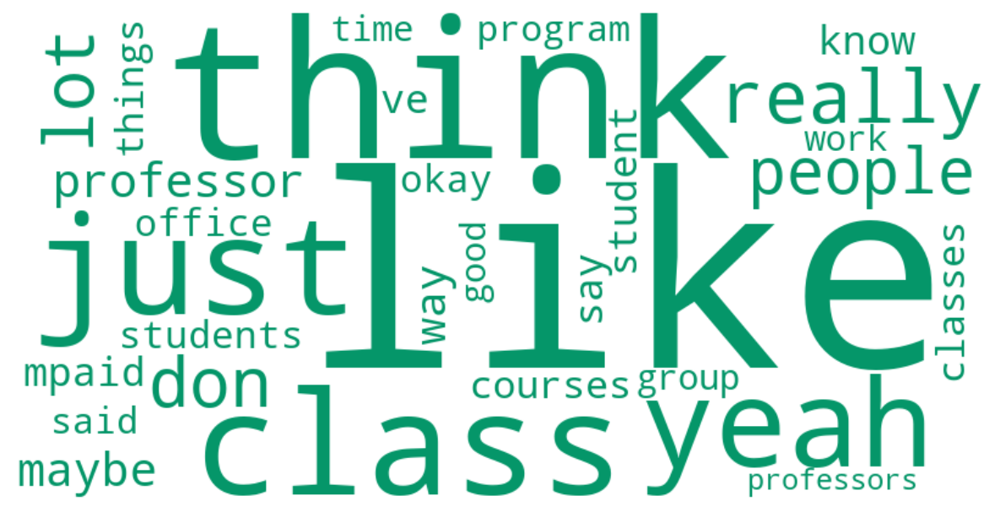

MPAID Focus Group
83 student turns · Mean sentiment: 0.48
83
Student turns
5977
Total words
0.48
Mean sentiment
Sentiment Arc
Emotional trajectory through the MPAID focus group session. Hover over points to read actual quotes.
Distinctive Vocabulary

Top Themes
Feedback & Assessment: Timing, Quality, and Accountability
"One suggestion for the professor would be to just share a detailed rubric and a model answer. That's worked well in the courses that we've had them."
Teaching Quality & Faculty Investment
"All the teachers try to connect what you learn in one class into another one and try to make everything practical as you go through your entire degree."
Core Curriculum: Structure, Flexibility, and Program Identity
"For me, it's very similar to what the [NAME] have said. it's very like academic, like intellectually challenging academically. But I think one input from me is like I wish that like the core courses o..."
Academic Rigor: Expectations Met and Unmet
"I think it oftentimes exceeded my expectations in terms of rigor and also coherence between the different classes. I've been really impressed by the rigor, maybe too much at times where the pace has b..."
Participation Grades vs. Class Size: A Structural Tension
"I think, actually, I was really surprised of how large the classrooms are, like the size. It's much bigger than I expected. I went to a small liberal arts college here in the U.S. And it was, again, i..."
Norm Enforcement & the Rules Gap
"So if I were the professor, I would probably ask the student to submit not just the final product, but also I'll ask every individuals in the same project to write the role taken by the member and how..."
Faculty Accessibility & Office Hours
"The office hours are open for everyone, even students who don't take the professor's class. So the student can probably find a time, but that means fewer slots for enrolled students."
Student Professionalism & Classroom Culture
"About student conduct in class, I think that's very professional."
Cold Calling
"I would say, I'm trying to find the correct words that doesn't really look so bad on me. I think what I first got in mind is like, it's really, it's too academically minded. Like, it's too research-ba..."
Reading Volume & Workload Sustainability
"The program office manages the workload calendar. They really put a lot of thought into it and make sure that we don't have too many assignments due in one week. That really helps a lot in the learnin..."
Distinctive Keywords
like
think
class
just
yeah
really
lot
don
people
professor
maybe
way
student
know
ve
say
mpaid
courses
classes
things